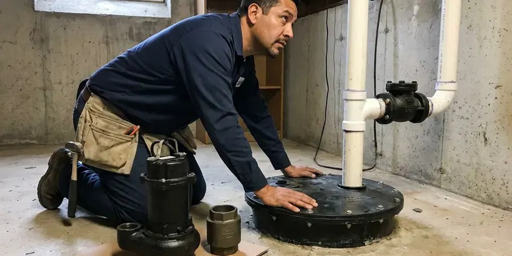

Sump Pump Installation in Lafayette, CO
GFR Plumbing installs submersible and pedestal sump pumps for basements, crawl spaces and low yards in Lafayette, CO, sized to real inflow.
- Flat Pricing
- Prompt Local Scheduling
- Rainy Season Scheduling
- Local Lafayette Crews

Dry Basement Start With the Right Pump in Lafayette, CO
Call GFR Plumbing for a no-cost estimate on a new sump pump.
Sump Pumps and Storm Water Drainage in Lafayette, CO
GFR Plumbing hears the same story from Lafayette, CO homeowners every spring: the old pump hummed but never moved water. Usually the impeller is worn or the float is stuck. We replace it and test with a full pit.
Work we handle every week:
- Permits and code inspections handled
- Check valves, alarms and backup pumps
- Work that meets Colorado plumbing code

Additional Plumbing Installation Services in Lafayette, CO
We install water heaters, pumps, lines, and fixtures across Lafayette, CO with careful, permitted work that passes inspection the first time.


Customers
Why Choose GFR Plumbing for Sump Pump Installation in Lafayette, CO?
A pump that short cycles every forty seconds will not last. We fix that by sizing the pit and the pump together. The first big storm tells the truth.
- Durable Pumps, We skip the bargain-bin pumps and install units built for years of heavy cycling.
- Local Experience, We know how ground water and soil behave around Lafayette basements, and that shapes the pump we pick.
- Proper Discharge, Discharge lines end well clear of the foundation and away from the neighbors.
Citywide Coverage
Sump pump installs in every part of Lafayette are covered by GFR Plumbing, with the same crews on each route. Older houses near the center and newer subdivisions on the outskirts are both on our regular routes.
Experienced Team
Our plumbers have set hundreds of sump pumps in Lafayette homes. They can tell a worn impeller from a stuck float by the sound the pump makes before they even lift the lid.
Safety-First Approach
Every sump pump we install in Lafayette follows local and state code. Permits get pulled when the job needs them.
Trusted Certified Lafayette Plumbing Services Professionals
At GFR Plumbing, we are proud to offer certified plumbing services throughout Lafayette, CO. Credentials matter in this trade. Our plumbers hold recognized industry credentials, and they follow strict safety and quality rules on every repair, installation and maintenance call we run.
Call Us Now PHCC Plumbing Contractor Recognition
PHCC Plumbing Contractor Recognition Better Business Bureau (BBB) Accreditation
Better Business Bureau (BBB) Accreditation Angi Certified Pro
Angi Certified Pro ISO 9001 Quality Management Certification
ISO 9001 Quality Management CertificationStorm-Ready Sump Pump Work in Lafayette, CO
Combination Sump Pump System Installation in Lafayette, CO
Two pumps on one riser cover both kinds of failure, a dead motor and a dead outlet. The primary runs on house power and handles the everyday inflow, while the battery unit waits above it on a separate float. People with carpet downstairs buy these. We install them in homes where a flood would ruin flooring and drywall.

Sump Pump Installation Cost in Lafayette, CO
Price depends mostly on whether a pit already exists. A swap in an existing pit is the low end. Backups add cost. We list each option on a written quote.
Combination Sump Pump Systems in Lafayette
Combination units pair a primary pump and a battery backup on one pre-plumbed discharge assembly. They fit pits where two separate pumps would crowd each other. Install time is shorter too. They suit homes that want backup protection but do not want to enlarge the pit.
Sump Pump Replacement in Lafayette, CO
Floats stick and motors seize when a pump sits idle for months between storms. When we replace a pump we also check the basin for silt, look at the check valve flapper and run water through the discharge line to find any clogs. Undersized pumps get upsized. We fill the pit and watch it run.
Zoeller Sump Pump Installation in Lafayette, CO
Zoeller has built cast iron sump pumps for decades, and parts are easy to get. The M53 and the M98 are the two we set most, depending on lift and inflow, and both come with mechanical float switches that hold up for years. Backup and combo units are available too. We help you pick the model that fits the pit.
Battery Backup Sump Pump Systems in Lafayette, CO
Backup systems we install use sealed AGM batteries that do not need water. The charger keeps the battery topped off. Expect a battery swap every four to five years. Finished basements get the most out of them.
Submersible Sump Pump Installation in Lafayette
Submersible pumps live at the bottom of the pit with a sealed, oil-cooled motor. Because the motor is cooled by the surrounding water, they run quieter and can push more gallons per minute up a tall lift than most pedestal pumps. Lids close flat over them. Each install gets a sealed lid and a grommet around the cord to keep out radon and odor.

Battery Backup Sump Pump Installation in Lafayette, CO
Storms knock out power at the exact moment the pit is filling fastest. The backup pump gets its own float and its own check valve, and it runs off a sealed 12-volt battery when the outlet goes dead. Most run five to seven hours on a full charge. We mount the charger on the wall, off the floor.
Local Sump Pump Installers in Lafayette, CO
Local soil and the way Lafayette, CO homes were built both change how a sump system should go in. GFR Plumbing has set pumps in clay, sand and rock. Clay holds water against the wall longer, which means the pump runs more and needs a bigger pit to rest between cycles. We size for that.
Searching for sump pump installation near me in Lafayette, CO usually means the pit is already filling. GFR Plumbing keeps local crews on the road so most calls get a visit the same day, even during a long stretch of storms when everybody is calling at once. Common pumps ride on the truck.
GFR Plumbing at a Glance
- Fully licensed plumbing team covering Lafayette, CO
- Same-day appointments and 24/7 emergency response
- Upfront, flat-rate pricing before work begins
- 4.8-star rated by 750+ Colorado customers
Lafayette Map
Lafayette Information
- Population
- 30,439
- Area codes
- 303/720/970
- Service area
- Lafayette and communities within 40 miles
- Nearby
- Broomfield, Westminster, Boulder, Thornton
Slow-draining ground keeps rain against the foundation for days, so a good pump with a clear discharge line matter for low lots in Lafayette, CO.
Expert Services
Call GFR Plumbing for reliable plumbing work done by licensed pros in Lafayette, CO.
Our Specialized Plumbing Services in Lafayette, CO
At GFR Plumbing, we handle the full list of plumbing services across Lafayette, CO. From leak detection to full system installs, our team works fast and charges fair prices on homes and commercial properties alike. Explore our core services below:


Our Sump Pump Install Process in Lafayette, CO
We leave a clean basement and a pump that has been tested.
Tell Us Where the Water Is
Call (720) 727-9398 and describe where water collects. We inspect it and recommend a pump and pit.
Prepare the Pit
We clean the existing basin or cut and dig a new pit, then set it in washed gravel.
Install and Test
We set the pump, the check valve and the discharge. Then we fill the pit and show you how it works.
Frequently Asked Questions About Sump Pump Installation in Lafayette
Most Lafayette, CO sump pump jobs land between $600 and $1,800. That covers the pump, the check valve and labor. New pits cost more. We write it all down before work starts.
Doing it yourself is possible but risky. Getting the pit depth, the check valve orientation, the discharge route and the outlet wiring right takes experience, and one mistake shows up during the next storm. We do it daily.
Test it every month by pouring a bucket of water into the pit. Once a year, scoop out silt, check the float for free movement and walk outside to make sure the discharge outlet is clear of leaves and ice. It is quick.
Discharge should end at least ten feet from the foundation, on ground that slopes away. Most cities do not allow sump water in the sanitary sewer.
Have it cleaned and inspected once a year, ideally before the rainy season. The service covers the float switch, the check valve, the pit and a full test of the discharge line to the outside. Small fixes prevent big floods.
Grinding, rattling or a pump that runs with no water in the pit are all warning signs. Rust on the housing is another. A flooded basement settles it.
Plan on seven to ten years for a well-kept pump. Heavy use shortens that. A quick inspection tells us where it stands.
Our trucks carry Zoeller, Liberty, Wayne and Flotec pumps. We choose based on lift, inflow and budget.
Hear From Customers Who Hired Our Plumbing Experts

Sofia M.
Two new toilets went in during one visit. The tech set them on new wax rings and swapped the old supply lines. He also noticed our bathroom faucet dripping and replaced the cartridge while he was there. No mess left behind.
Toilet Installation · Boulder, CO
Brian W.
I smelled gas behind the dryer and called right away. The plumber found a corroded flex connector, replaced it, and pressure tested the whole line before turning the gas back on. He let me watch the gauge hold steady for fifteen minutes.
Gas Line Repair · Boulder, CO
Marcus H.
Grease from the fryer line kept clogging the kitchen drain at my diner. GFR Plumbing hydro jetted the line after closing, showed me the buildup on camera, and set us up on a quarterly cleaning so it does not catch us on a Friday again.
Drain Cleaning · Thornton, CO
Patricia H.
We had a slab leak that two other companies could not find. GFR Plumbing located it in under an hour with a listening device. They rerouted the line through the attic instead of breaking up the floor, so we kept our kitchen tile.
Slab Leak Repair · Thornton, COLaura S.
Our 40 gallon tank started leaking from the bottom after thirteen years. The tech hauled the old one out, set a new unit with a fresh expansion tank, and had hot water running in about four hours. He took the old tank with him too.
Water Heater Replacement · Lafayette, CORobert G.
The camera showed a full break in our clay sewer line near the street. GFR Plumbing replaced it with a trenchless pipe burst, so the only digging was two small pits in the yard. They let us watch the footage before and after.
Sewer Line Replacement · Broomfield, CO